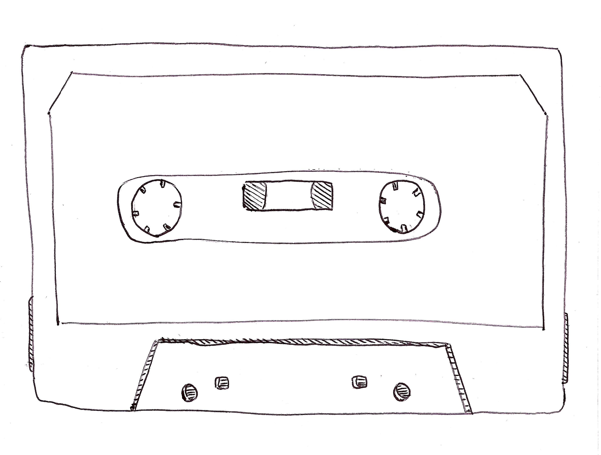

La Crève
/////// Punk Rock Emotionnel /////// Grenoble
News
- On a enregistré une reprise de Raz-de-marée du groupe Escape pour une compilation à sortir de Stonehenge records. Yep
Musique

S/T, cd & K7 (juin 2014)


Les objets crèvent, split disque avec Les Objets Meurent (mai 2011)

Compilations
Stonehenge Records, Raz de Marée de Escape (2015)
http://www.stonehengerecords.com/
Sous-Sol, compilation de groupes grenoblois, Les Vacances (octobre 2012)

Concerts

27 août 15: ?????
28 aoüt 15: Lyon?
- 27 août 15: concert concert concert
- 27 août 15: concert concert concert
- 27 août 15: concert concert concert
- 27 août 15: concert concert concert
- 27 août 15: concert concert concert
- 27 août 15: concert concert concert
- 27 août 15: concert concert concert
- 27 août 15: concert concert concert
- 27 août 15: concert concert concert
- 27 août 15: concert concert concert
Paroles
[It is] notable that the Feynman lectures (3 volumes) write about all of physics in 1800 pages, using only 2 levels of hierarchical headings: chapters and A-level heads in the text. It also uses the methodology of sentences which then cumulate sequentially into paragraphs, rather than the grunts of bullet points. Undergraduate Caltech physics is very complicated material, but it didn't require an elaborate hierarchy to organize.
Contact